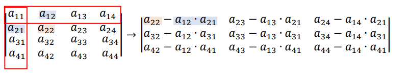

Essa regra nos permite calcular o determinante de uma matriz de ordem 𝑛 usando uma matriz de
ordem (𝑛 − 1). Ou seja, é uma regra prática que transforma uma matriz de ordem 4, por exemplo, numa
matriz de ordem 3 que possui o mesmo determinante. Da mesma forma, podemos continuar o processo e
transformar essa matriz de ordem 3 numa outra de ordem 2 e, no final, calcular seu determinante. a Única condição necessária é que A11 seja igual a 1
Caso seja diferente de 1 podemos usar as propriedades de troca de filas ou o teorema de Jacob para deixar A11 = 1
Passo a passo da Regra de Chió
1º) Desde que M tenha 𝑎11 = 1, suprimimos a 1ª linha e 1ª coluna.
2º) De cada elemento da “nova” matriz, subtraímos o produto dos elementos que estão nas
extremidades da sua linha e coluna suprimidas.
3º) Com as diferenças obtidas, construímos uma matriz de ordem (n – 1) cujo determinante é igual a M.

Você deve estar pensando, "Porque um conteúdo facil como a regra de Chió foi considerada pelo aluno Dificil?", Simples a explicação, tive uma dificuldade imensa em montar a segunda Matriz para calcular, e ainda tive dificuldades na troca de filas e no teorema de Jacob, e por isso foi complicado, e ainda após tranformar por exemplo uma matriz 4x4 em 3x3, ter que fazer o determinante, que também sempre me complicou, acho que em ambos os itens(determinante e Chió) são apenas casos de decorar a questão de sinais e soma e subtração, pois são muitos calculos pequenos que confundem um pouco.